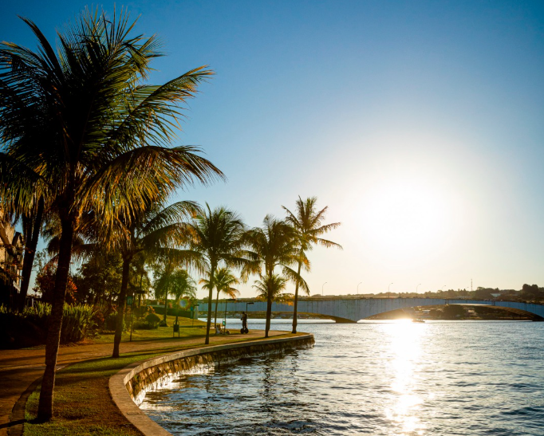
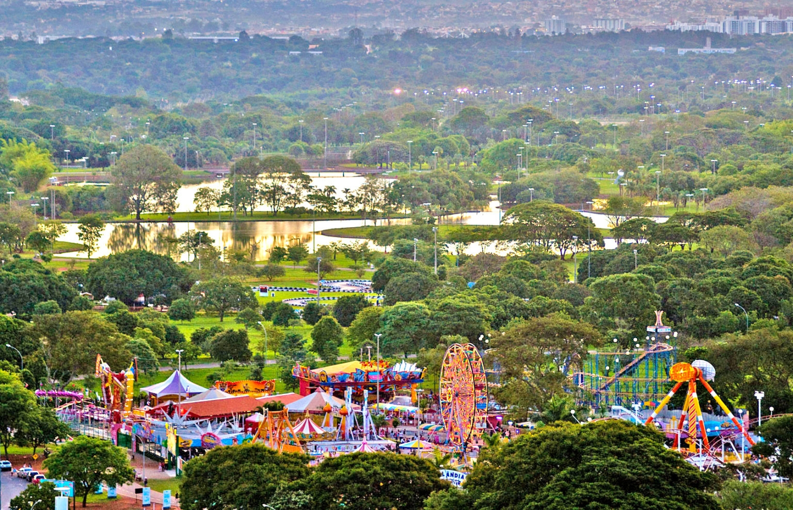

O que eu mais gosto em Brasília - Distrito Federal
Passear no Eixão

O Eixo Rodoviário de Brasília (DF-002), mais conhecido pela alcunha informal de Eixão, é uma longa avenida que fica no Plano Piloto de Brasília, a capital do Brasil. Foi inaugurada com a cidade, no dia 21 de abril de 1960. Estende-se por cerca de treze quilômetros, ligando a Ponte do Bragueto, no norte do Plano Piloto, a Estrada Parque Aeroporto (EPAR ou DF-047), ao sul, já próximo ao Aeroporto Internacional de Brasília.
O Eixão sempre é assunto. O que será que estão falando a respeito no X ?
Os restaurantes do Pontão do Lago Sul
Depois de um dia de trabalho, nada melhor que um jantar em fámilia, com um belo chopp gelado, um petisco e uma conversa entre familiares. Opções de sobra na região do Lago Sul.
Veja quais os melhores restaurantes e bares da região no Guia do Pontão do Lago Sul.
Parque da Cidade Dona Sarah Kubitschek
O Parque da Cidade Dona Sarah Kubitschek, popularmente conhecido como Parque da Cidade, é um parque urbano localizado na Asa Sul, em Brasília, Distrito Federal. Foi fundado em 11 de outubro de 1978 e possui 420 hectares (4 200 000 m²), sendo o maior parque urbano da América do Sul.
Veja no mapa como chegar ao parque.
E existem muitos outros lugares interessantes na cidade...
- A Arena BRB.
- A Esplanada dos Ministérios.
- Diversos parques ecológicos.
- Diversos pontos turísticos como a Água Mineral, Zoológico, Museus, etc.